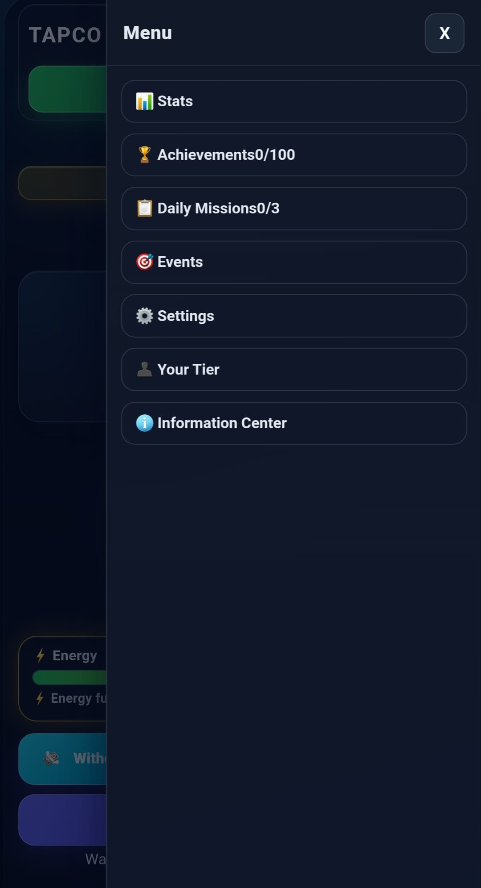
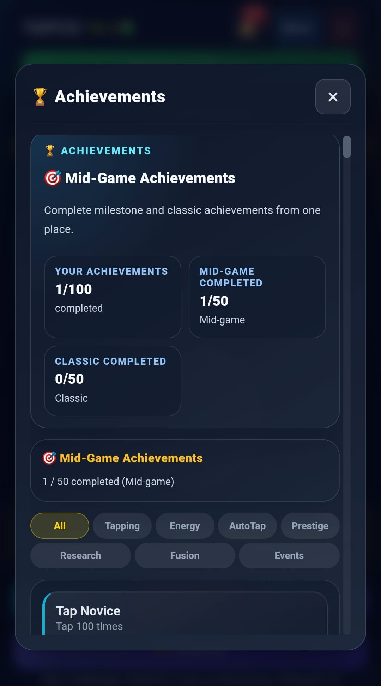
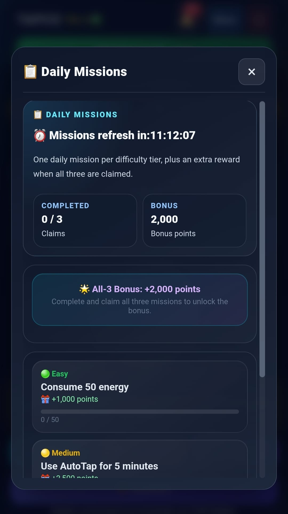
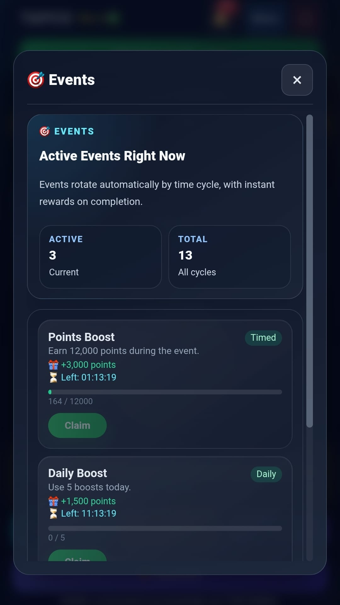
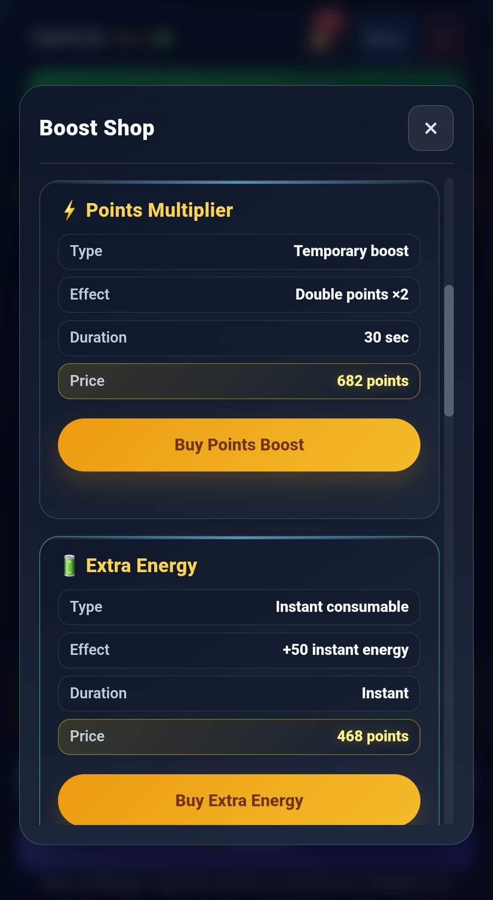
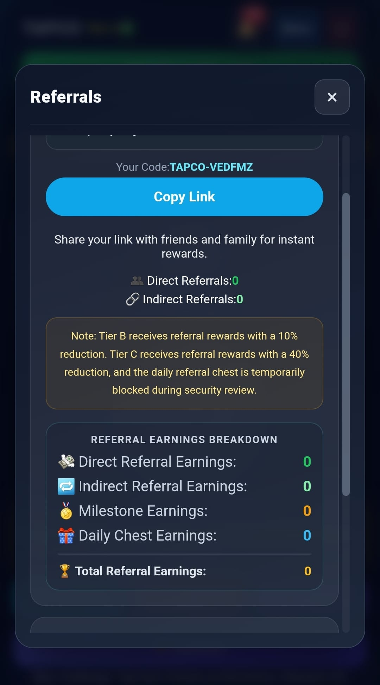
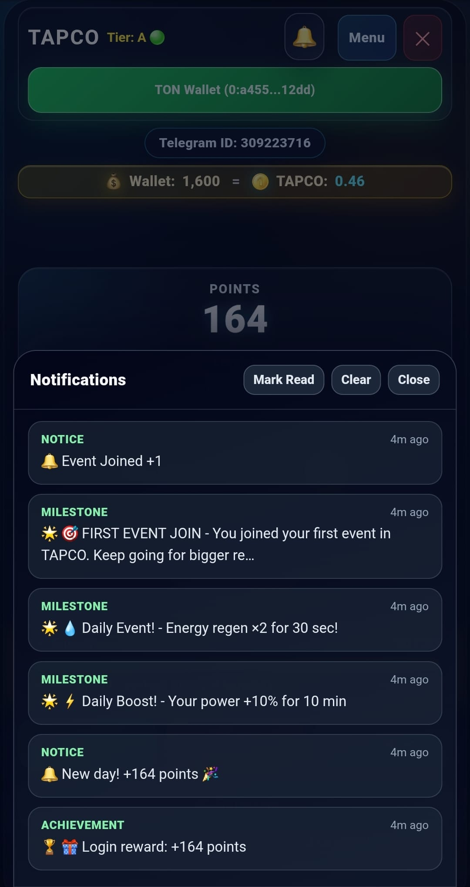
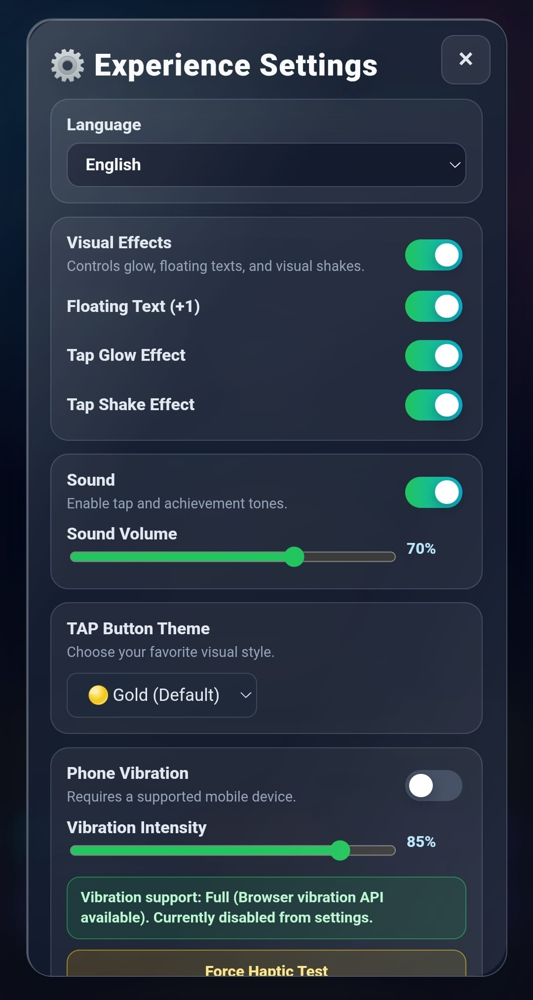
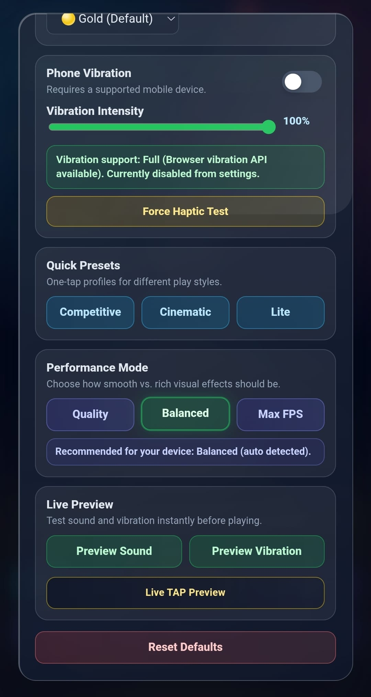

TAPCO GAME
TAPCO GAMEGameplay
Player actions occur inside Telegram for continuity and identity binding.
اللعب
أفعال اللاعب تتم داخل تيليغرام لضمان الاستمرارية وربط الهوية.
Oynanis
Oyuncu eylemleri süreklilik ve kimlik baglamasi için Telegram içinde gerçeklesir.
TAPCO is built as a Telegram-first experience. Core interaction happens in the mini app, while the decisions that affect score, rewards, and account-sensitive outcomes are protected by backend validation. This separation is what allows the product to feel active while still preserving fairness.
تم بناء TAPCO كتجربة تعمل أولاً داخل تيليغرام. التفاعل الأساسي يحدث داخل mini app، بينما تبقى القرارات التي تؤثر على النقاط والمكافآت والنتائج الحساسة محمية عبر التحقق من جهة الخادم. هذا الفصل هو ما يسمح للمنتج بأن يكون نشطاً من دون أن يفقد العدالة.
TAPCO, once Telegram deneyimi olarak kurulur. Ana etkilesim mini app içinde olurken puanlari, ödülleri ve hassas hesap sonuclarini etkileyen kararlar backend doğrulamasiyla korunur. Bu ayrim, ürünün canli hissetmesini saglarken adaleti korur.

The loop begins with a player action, but TAPCO is not defined by clicking alone. Progression, upgrade effects, eligibility checks, and anti-abuse rules all shape the meaning of what the player sees. The interface can signal momentum, but the system still decides what becomes authoritative.
That distinction matters because games built on local counters alone become easy to manipulate. TAPCO reduces this risk by tying meaningful outcomes to verified event handling.
تبدأ الحلقة من فعل يقوم به اللاعب، لكن TAPCO لا تُعرّف بالنقر وحده. فالتقدم وتأثيرات الترقيات وفحوص الأهلية وقواعد مكافحة التلاعب كلها تشكّل معنى ما يراه اللاعب. قد تشير الواجهة إلى وجود تقدم، لكن النظام هو من يقرر ما الذي يصبح معتمداً فعلاً.
هذا الفرق مهم لأن الألعاب التي تعتمد على العدادات المحلية وحدها تصبح سهلة التلاعب. وتقلل TAPCO هذا الخطر عبر ربط النتائج المهمة بمعالجة أحداث موثقة.
Dongu oyuncu aksiyonuyla baslar, ancak TAPCO sadece tiklamadan ibaret değildir. Ilerleme, gelistirme etkileri, uygünlük kontrolleri ve anti-abuse kurallari oyuncunun gordugu seyin anlamini belirler. Arayuz momentum gosterebilir, fakat neyin otoriter sonuca donecegine sistem karar verir.
Bu ayrim önemlidir cunku sadece yerel sayaclara dayanan oyunlar kolayca manipule edilir. TAPCO, anlamli sonuclari doğrulanmış olay işlemeye baglayarak bu riski azaltir.
Player actions occur inside Telegram for continuity and identity binding.
أفعال اللاعب تتم داخل تيليغرام لضمان الاستمرارية وربط الهوية.
Oyuncu eylemleri süreklilik ve kimlik baglamasi için Telegram içinde gerçeklesir.
Server-side rules decide which events become score or reward outcomes.
قواعد الخادم هي التي تحدد ما الأحداث التي تتحول إلى نقاط أو مكافآت.
Hangi olaylarin puan veya ödüle donecegine sunucu kurallari karar verir.
Replay resistance, rate control, and account checks protect fairness.
مقاومة إعادة التشغيل والتحكم بالمعدل وفحوص الحسابات تحمي العدالة.
Replay direnci, oran kontrolu ve hesap denetimleri adaleti korur.
Every major screen of TAPCO is shown below with a full explanation of what you will find, how it works, and how it fits into the overall game experience. Screenshots are taken from a real live session.
كل شاشة رئيسية في TAPCO معروضة أدناه مع شرح كامل لما ستجده فيها وكيف تعمل وكيف تتناسب مع تجربة اللعبة الكاملة. لقطات الشاشة مأخوذة من جلسة حقيقية ومباشرة.
TAPCO'nun her önemli ekranı aşağıda gösterilmekte olup ne bulacağınız, nasıl çalıştığı ve genel oyun deneyimine nasıl uyduğuna dair tam açıklama sunulmaktadır. Ekran görüntüleri gerçek bir canlı oturumdan alınmıştır.

The TAPCO Menu is your gateway to every major feature in the game. Tap the Menu button in the top-right corner at any time to access:
→ The menu brings together all core sections used in the current TAPCO release.
قائمة TAPCO هي بوابتك لكل ميزة رئيسية في اللعبة. اضغط على زر القائمة في الزاوية اليمنى العليا في أي وقت للوصول إلى:
→ تجمع القائمة جميع الأقسام الأساسية المستخدمة في إصدار TAPCO الحالي.
TAPCO Menüsü, oyundaki her önemli özelliğe açılan kapınızdır. Her özelliğe erişmek için sağ üst köşedeki Menü düğmesine istediğiniz zaman dokunun:
→ Menü, TAPCO'nun mevcut sürümünde kullanılan tüm temel bölümleri bir araya getirir.

The Stats screen is your daily performance mirror. It provides a verified, server-side snapshot of everything you have done in the current session:
→ Your collected points can be directed toward your internal wallet balance for use in future reward cycles within the game.
شاشة الإحصائيات هي مرآة أدائك اليومي. توفر لقطة موثقة من جهة الخادم لكل ما قمت به في الجلسة الحالية:
→ يمكن توجيه النقاط المجمعة نحو رصيد محفظتك الداخلية للاستخدام في دورات المكافآت المستقبلية داخل اللعبة.
İstatistikler ekranı günlük performans aynınızdır. Mevcut oturumda yaptığınız her şeyin sunucu tarafında doğrulanmış anlık görüntüsünü sunar:
→ Biriktirilen puanlar, oyun içindeki gelecekteki ödül döngülerinde kullanılmak üzere iç cüzdan bakiyenize yönlendirilebilir.

The Achievements system is one of TAPCO's deepest long-term progression layers. There are 100 achievements in total, split across two tracks:
Achievements are further organized into eight filter categories you can browse independently:
Each achievement shows its title, requirement, category, and a live progress bar. Completing one triggers an instant reward notification and milestone credit. Achievements are verified by the server — client-only actions do not count.
→ Many achievements reward daily consistency rather than single long sessions. Return each day to make steady progress across all categories.
نظام الإنجازات هو أحد أعمق طبقات التقدم طويل المدى في TAPCO. يوجد 100 إنجاز إجمالاً موزعة على مسارين:
الإنجازات منظمة في ثماني فئات يمكن تصفحها بشكل منفصل:
يُظهر كل إنجاز عنوانه ومتطلبه وفئته وشريط تقدم حي. إكمال إنجاز يُشغّل إشعار مكافأة فورية وائتمان معلم. الإنجازات تُتحقق منها من جهة الخادم — الأفعال من جهة العميل فقط لا تُحتسب.
→ كثير من الإنجازات تكافئ الاتساق اليومي لا جلسة طويلة واحدة. عُد كل يوم لتحقيق تقدم ثابت عبر جميع الفئات.
Başarı sistemi TAPCO'nun en derin uzun vadeli ilerleme katmanlarından biridir. İki parkura bölünmüş toplam 100 başarı bulunmaktadır:
Başarılar ayrıca bağımsız olarak gezinebileceğiniz sekiz filtre kategorisine ayrılmıştır:
Her başarı başlığını, gereksinimini, kategorisini ve canlı bir ilerleme çubuğunu gösterir. Birini tamamlamak anında ödül bildirimi ve kilometre taşı kredisi tetikler. Başarılar sunucu tarafında doğrulanır — yalnızca istemci tarafı eylemler sayılmaz.
→ Pek çok başarı tek uzun oturum yerine günlük tutarlılığı ödüllendirir. Tüm kategorilerde istikrarlı ilerleme sağlamak için her gün geri dönün.

Daily Missions give every player three fresh goals every 24 hours, organized by difficulty. They are one of the most reliable ways to grow your point balance consistently:
A live countdown timer at the top shows exactly when missions will refresh. Missions completed but not yet claimed will not count — you must tap the claim button before the reset. The server verifies each mission completion before crediting your balance.
→ Mission types rotate regularly to keep the daily experience fresh. Check the game each day as you may find easier routes to the All-3 Bonus on some days than others.
تمنح المهام اليومية كل لاعب ثلاثة أهداف جديدة كل 24 ساعة، منظمة حسب الصعوبة. وهي من أكثر الطرق موثوقية لتنمية رصيد نقاطك باستمرار:
يُظهر مؤقت العد التنازلي الحي في الأعلى بالضبط متى ستُجدَّد المهام. المهام المكتملة وغير المطالب بها لن تُحتسب — يجب الضغط على زر المطالبة قبل الإعادة. يتحقق الخادم من إكمال كل مهمة قبل إضافة رصيدك.
→ أنواع المهام تتناوب بانتظام للحفاظ على تجدد التجربة اليومية. تفقّد اللعبة كل يوم إذ قد تجد طرقاً أسهل للوصول إلى مكافأة الثلاثة في بعض الأيام.
Günlük Görevler her oyuncuya her 24 saatte bir zorluk düzeyine göre düzenlenmiş üç yeni hedef sunar. Puan bakiyenizi tutarlı biçimde artırmanın en güvenilir yollarından biridir:
Üstteki canlı geri sayım sayacı görevlerin tam olarak ne zaman yenileneceğini gösterir. Tamamlanan ancak henüz talep edilmemiş görevler sayılmaz — sıfırlamadan önce talep düğmesine basmanız gerekir. Sunucu, bakiyenize yatırmadan önce her görev tamamlamasını doğrular.
→ Görev türleri günlük deneyimi taze tutmak için düzenli olarak döner. Her gün oyunu kontrol edin; bazı günlerde Tümünü Tamamlama Bonusu'na daha kolay yollar bulabilirsiniz.

The Events system runs a continuous set of time-limited and daily challenges. There are 13 total event cycles in the rotation — meaning multiple events are always active at once. Event types include:
The Claim button becomes clickable only after the server verifies the event goal is genuinely met. Unverified progress will not trigger the reward. Events offer some of the highest per-session point bonuses available in TAPCO.
→ Always check your Events screen when you open the game — a timed event may be near completion or a new one may have just started without notification.
يُشغّل نظام الأحداث مجموعة مستمرة من التحديات المحدودة الوقت واليومية. يوجد 13 دورة أحداث إجمالاً في التناوب — مما يعني وجود أحداث متعددة نشطة في آن واحد. أنواع الأحداث تشمل:
يصبح زر المطالبة قابلاً للنقر فقط بعد أن يتحقق الخادم من بلوغ هدف الحدث فعلاً. التقدم غير الموثق لن يُشغّل المكافأة. تقدم الأحداث بعضاً من أعلى مكافآت النقاط لكل جلسة في TAPCO.
→ تحقق دائماً من شاشة الأحداث عند فتح اللعبة — قد يكون حدث محدود الوقت قريباً من الاكتمال أو قد بدأ حدث جديد للتو بدون إشعار.
Etkinlikler sistemi sürekli bir süreli ve günlük meydan okuma seti çalıştırır. Rotasyonda 13 toplam etkinlik döngüsü bulunmaktadır; yani her zaman aynı anda birden fazla etkinlik aktiftir. Etkinlik türleri şunlardır:
Talep Et düğmesi yalnızca sunucu etkinlik hedefinin gerçekten karşılandığını doğruladıktan sonra tıklanabilir hale gelir. Doğrulanmamış ilerleme ödülü tetiklemez. Etkinlikler TAPCO'da oturum başına mevcut en yüksek puan bonuslarından bazılarını sunar.
→ Oyunu açtığınızda her zaman Etkinlikler ekranınızı kontrol edin — süreli bir etkinlik tamamlanmaya yakın olabilir veya bildirim olmadan yeni bir etkinlik başlamış olabilir.

The Boost Shop lets you spend accumulated points on consumable boosts that give you a strategic edge in the current session. All purchases are processed and deducted server-side — the point cost you see is calculated based on your current level and score:
Prices are dynamic and change with your game progression level. Purchases are final — there are no refunds once a boost is bought. Scroll down inside the Shop to see all available items; additional boost types become accessible as your account level increases.
→ The Points Multiplier gives the best return when combined with a full energy bar — activate it just before you start a sustained tapping session for maximum effect.
يتيح لك متجر التعزيزات إنفاق النقاط المتراكمة على تعزيزات قابلة للاستهلاك تمنحك ميزة استراتيجية في الجلسة الحالية. جميع عمليات الشراء تُعالَج وتُخصم من جهة الخادم — تكلفة النقاط التي تراها تُحسب بناءً على مستواك ونقاطك الحاليين:
الأسعار ديناميكية وتتغير مع مستوى تقدمك في اللعبة. عمليات الشراء نهائية — لا استرداد بعد شراء التعزيز. مرر للأسفل داخل المتجر لرؤية جميع العناصر المتاحة؛ تصبح أنواع تعزيزات إضافية متاحة مع زيادة مستوى حسابك.
→ يعطي مضاعف النقاط أفضل عائد عند دمجه مع شريط طاقة ممتلئ — فعّله قبيل بدء جلسة نقر مكثفة للحصول على أقصى تأثير.
Boost Mağazası, birikmiş puanları mevcut oturumda stratejik avantaj sağlayan tüketilebilir boostlara harcamanıza olanak tanır. Tüm satın alımlar sunucu tarafında işlenir ve düşülür — gördüğünüz puan maliyeti mevcut seviyenize ve puanınıza göre hesaplanır:
Fiyatlar dinamiktir ve oyun ilerleme seviyenizle değişir. Satın alımlar kesindir — bir boost satın alındıktan sonra iade yoktur. Mevcut tüm öğeleri görmek için Mağazanın içinde aşağı kaydırın; hesap seviyeniz arttıkça ek boost türleri erişilebilir hale gelir.
→ Puan Çarpanı, dolu bir enerji çubuğuyla birleştirildiğinde en iyi getiriyi sağlar — maksimum etki için yoğun bir tıklama oturumuna başlamadan hemen önce etkinleştirin.

Every TAPCO player receives a unique personal referral code (e.g., TAPCO-VEDFMZ) and a shareable invite link. The referral system rewards both the inviter and the newcomer when used correctly:
Accumulated points from gameplay and referrals are reflected in your in-app wallet balance and can be used across the game's reward and withdrawal flows.
→ Quality matters more than quantity — active referrals who keep playing contribute more to your earnings than inactive ones. Invite players genuinely interested in the game.
يحصل كل لاعب في TAPCO على كود إحالة شخصي فريد (مثال: TAPCO-VEDFMZ) ورابط دعوة قابل للمشاركة. نظام الإحالة يكافئ كلاً من المدعوِّ والوافد الجديد عند الاستخدام الصحيح:
النقاط المتراكمة من اللعب والإحالات تنعكس في رصيد محفظة التطبيق ويمكن استخدامها ضمن مسارات المكافآت والسحب داخل اللعبة.
→ الجودة أهم من الكمية — الإحالات النشطة التي تستمر في اللعب تساهم في أرباحك أكثر من الخاملة. ادعُ لاعبين مهتمين فعلاً باللعبة.
Her TAPCO oyuncusu benzersiz bir kişisel referans kodu (örn. TAPCO-VEDFMZ) ve paylaşılabilir bir davet bağlantısı alır. Referans sistemi, doğru kullanıldığında hem davet edeni hem de yeni geleni ödüllendirir:
Oyun ve referanslardan biriken puanlar oyun içi cüzdan bakiyenize yansır ve oyunun ödül ve çekim akışlarında kullanılabilir.
→ Kalite miktardan daha önemlidir — oynamaya devam eden aktif referanslar etkin olmayanlara kıyasla kazançlarınıza daha fazla katkıda bulunur. Oyuna gerçekten ilgi duyan oyuncuları davet edin.

The Notifications panel maintains a timestamped log of all meaningful game events connected to your account. Every entry reflects a server-verified outcome — not a client-side estimate. Notification types:
Panel controls: Mark Read clears the unread count badge from the bell icon. Clear removes all notifications from view. Close hides the panel without deleting history. Notifications are stored and served from the server, so your log persists across sessions and devices.
→ Reviewing your notification history after each session is the best way to confirm which rewards were actually applied and verify your daily progress is being recorded correctly.
يحتفظ لوح الإشعارات بسجل مُوقَّت لجميع أحداث اللعبة ذات المعنى المرتبطة بحسابك. كل إدخال يعكس نتيجة مُتحقق منها من جهة الخادم — وليس تقديراً من جهة العميل. أنواع الإشعارات:
تحكم اللوح: تمييز كمقروء يمسح عداد الإشعارات غير المقروءة من أيقونة الجرس. مسح يزيل جميع الإشعارات من العرض. إغلاق يُخفي اللوح دون حذف السجل. تُخزَّن الإشعارات وتُقدَّم من الخادم، لذا يستمر سجلك عبر الجلسات والأجهزة.
→ مراجعة سجل إشعاراتك بعد كل جلسة هو أفضل طريقة لتأكيد المكافآت التي طُبّقت فعلاً والتحقق من تسجيل تقدمك اليومي بشكل صحيح.
Bildirimler paneli, hesabınıza bağlı tüm anlamlı oyun olaylarının zaman damgalı kaydını tutar. Her giriş sunucu tarafında doğrulanmış bir sonucu yansıtır — istemci taraflı tahmin değil. Bildirim türleri:
Panel kontrolleri: Okundu İşaretle zil simgesindeki okunmamış sayım rozetini temizler. Temizle görünümdeki tüm bildirimleri kaldırır. Kapat geçmişi silmeden paneli gizler. Bildirimler sunucuda depolanır ve sunulur, dolayısıyla günlüğünüz oturumlar ve cihazlar arasında kalıcıdır.
→ Her oturumun ardından bildirim geçmişinizi gözden geçirmek, hangi ödüllerin gerçekten uygulandığını onaylamanın ve günlük ilerlemenizin doğru kaydedildiğini doğrulamanın en iyi yoludur.


The Settings screen (two panels shown) gives you granular control over language, visuals, sound, vibration, and performance. All settings are saved locally and applied instantly without restarting:
→ Use the Competitive preset on older or lower-performance devices to ensure smooth tapping without lag, then switch to Cinematic when on a newer device for the full visual experience.
شاشة الإعدادات (لوحتان معروضتان) تمنحك تحكماً دقيقاً في اللغة والمرئيات والصوت والاهتزاز والأداء. تُحفظ جميع الإعدادات محلياً وتُطبَّق فوراً دون إعادة تشغيل:
→ استخدم الإعداد المسبق التنافسي على الأجهزة القديمة أو منخفضة الأداء لضمان نقر سلس دون تأخر، ثم انتقل إلى السينمائي على الجهاز الأحدث للتجربة البصرية الكاملة.
Ayarlar ekranı (iki panel gösterilmektedir) dil, görseller, ses, titreşim ve performans üzerinde ayrıntılı kontrol sağlar. Tüm ayarlar yerel olarak kaydedilir ve yeniden başlatmadan anında uygulanır:
→ Lag olmadan sorunsuz tıklama sağlamak için eski veya düşük performanslı cihazlarda Rekabetçi ön ayarını kullanın, ardından tam görsel deneyim için daha yeni bir cihaza geçtiğinizde Sinematik'e geçin.